STEP 9 / MPR Viewer
MPR の十字線が表示されるようになりました

各面に、ほかの 2 面の位置が線で出ます。画像をクリックすると、3 面がその点へ移ります。
以前の版では、色の渡し方の誤りで十字線が描かれていませんでした（クリックで移る操作は動いていました）。
線の色は 環境設定 ＞ 表示 ＞ MPR の「十字線の色」で、面ごとの色（Axial 緑・Sagittal 黄・Coronal 青）か単色（色も選べる）を選べます。
設定を変えたら、MPR を開き直すと反映されます。
GRAPHY-NEXT v0.5.0 / 操作ガイド
検査の索引と画像をまとめた「DB フォルダ」を、研究ごと・外付けディスクなどに分けて使えるようになりました。検査を別の DB フォルダへコピー・移動でき、DB フォルダを Google Drive に置くこともできます。監視フォルダからの自動取り込み、2D の ROI を 3D で見る改良、ワンド・ROI 統計などの改良も入っています。
環境設定 ＞ データ管理 ＞ DB フォルダ新しく作る・既存のものを開く・一覧から切り替える。切り替えるとアプリが再起動します
DB テーブル管理で検査の「別の DB へ…」コピーか移動を選ぶ。移し先は、次にその DB を開いたときに取り込まれます
環境設定（表示・通信先など）はどの DB でも共通DB フォルダの中には、検査の索引と DICOM ファイルだけが入ります
STEP 1 / 環境設定 ＞ データ管理 ＞ DB フォルダ
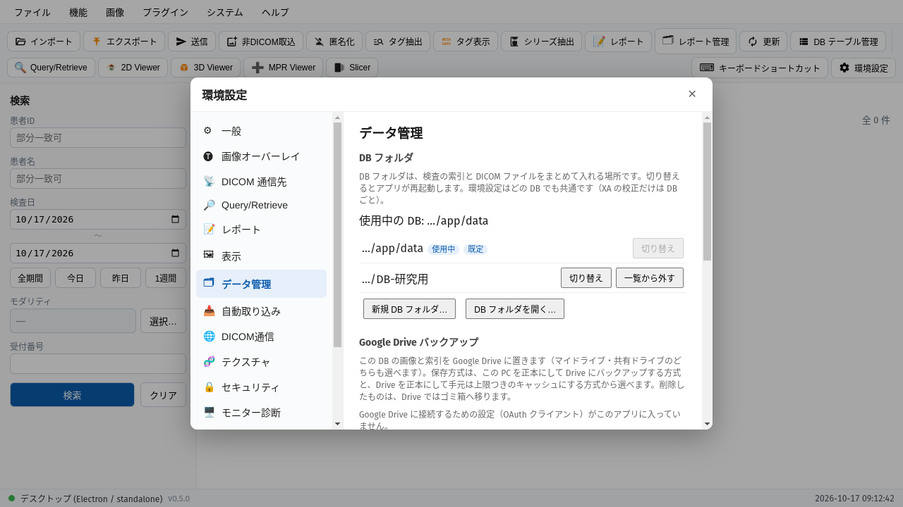
いま使っている DB（使用中）。最初からある DB は「既定」
前に使った DB。「切り替え」で再起動して切り替わります
空のフォルダを選び、新しい DB を作る
別の PC で作った DB・複製した DB を開く
画像はフォルダからの相対パスで記録します。フォルダごと複製・移動しても開けます。
外付けディスクが見つからないときは、再試行・既定の DB で起動・終了を選べます。
STEP 2 / DB テーブル管理 ＞ 検査の「別の DB へ…」
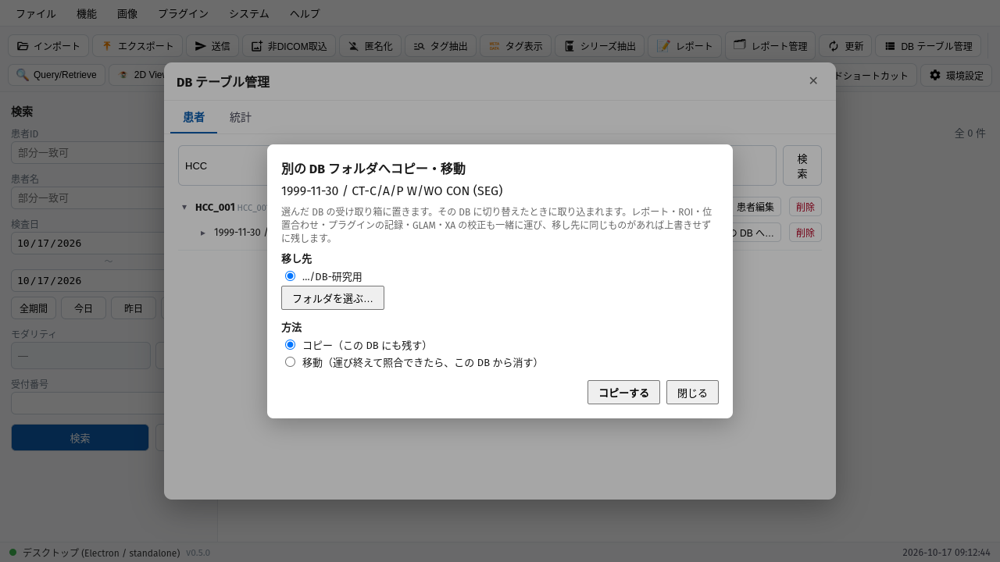
移し先の DB フォルダ。一覧に無いものは「フォルダを選ぶ…」から
方法。コピーは今の DB にも残し、移動は運び終えて照合できたら今の DB から消します
「コピーする」（移動のときは「移動する」）
レポート・ROI・位置合わせ・プラグインの記録なども一緒に運びます。移し先に同じものがあれば、上書きせずに残します。
移し先の DB に切り替えたときに取り込まれ、右下に件数が出ます。
STEP 3 / 環境設定 ＞ データ管理 ＞ Google Drive
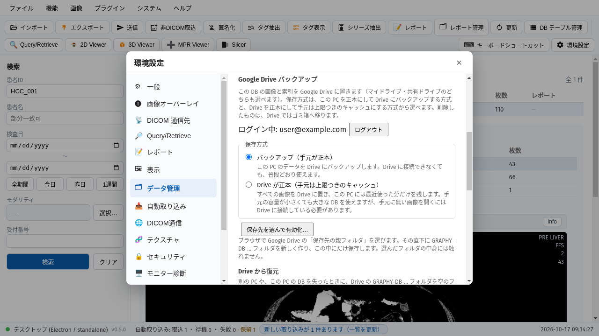
バックアップ（モード B）: この PC が正本。Drive は控えで、つながらなくても普段どおり使えます
Drive が正本（モード A）: 全画像を Drive に置き、この PC には最近使った分だけ残します
Drive の親フォルダを選ぶと、その下に GRAPHY-DB-… を作り、そこにだけ保存します
| こんなとき | 方式 |
|---|---|
| PC 1 台で使い、壊れたときの控えがほしい | バックアップ |
| 手元のディスクが小さい・画像が増え続ける | Drive が正本 |
マイドライブ・共有ドライブのどちらにも置けます。DB フォルダごとの設定です。
STEP 4 / Google Drive ＞ バックアップ（モード B）
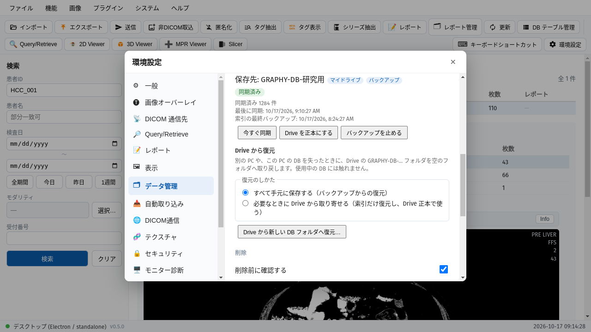
保存先と方式。マイドライブか共有ドライブかも出ます
同期の状態と件数。画像のほかに、検査の索引も定期的にバックアップします
今すぐ同期: 間隔を待たずに送ります
Drive を正本にする: すべて同期済みのときに、モード A へ切り替えられます
つながらない間は手元に貯め、つながると続きから送ります。この PC で削除したものは、Drive ではゴミ箱へ移ります。
1 つのバックアップは 1 台ずつ使います（別の端末では「この端末で使う」で引き継ぎ）。PC を失ったときは「Drive から新しい DB フォルダへ復元…」で取り戻せます。
STEP 5 / Google Drive ＞ Drive が正本（モード A）
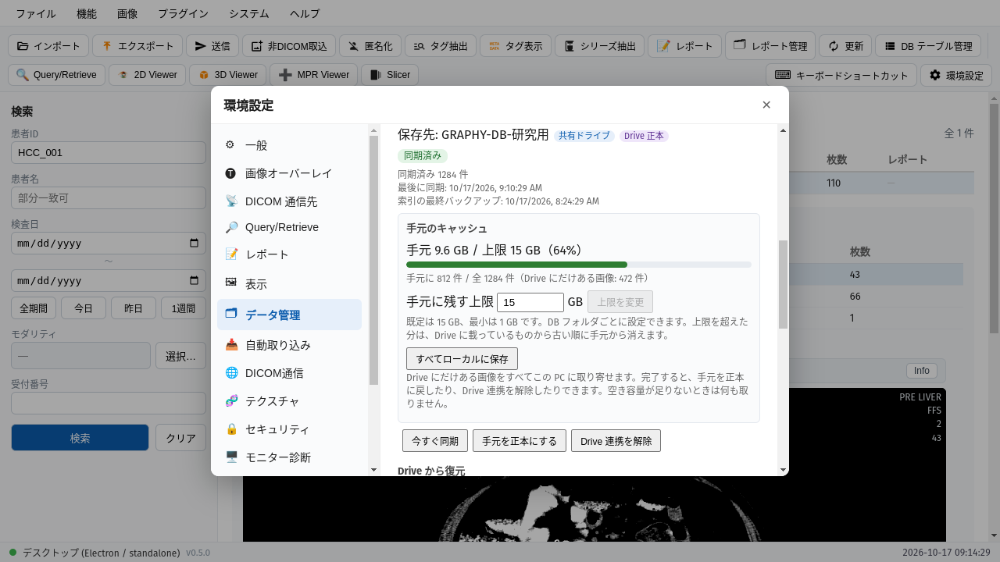
方式はDrive 正本。共有ドライブにも置けます
手元の使用量と、手元にある件数・Drive にだけある件数
手元に残す上限（既定 15 GiB・最小 1 GiB）。超えると、Drive に載っている古いものから手元だけ消します
すべてローカルに保存: Drive にだけある画像を取り寄せます（空き容量を先に確かめます）
手元を正本にする: 全件が手元にあるときだけ。Drive 連携の解除も同じ
手元に無い画像は、開いたときに Drive から取り寄せます。つながらないときは開けず、理由を出します。
未送信のもの・直近 10 分に読んだものは手元から消しません。この方式では、別の DB フォルダへのコピー・移動はできません。
STEP 6 / 環境設定 ＞ 自動取り込み
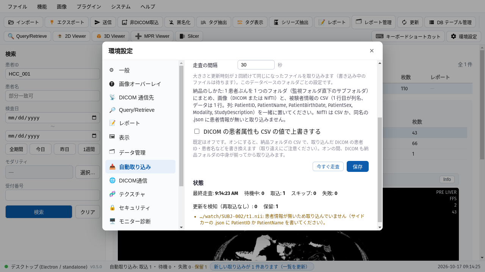
走査の間隔（秒）。大きさと更新時刻が 2 回続けて同じになってから取り込みます
今すぐ走査: 間隔を待たずに 1 回見ます
DICOM の患者属性も CSV で上書き（既定はオフ）
取込・待機・スキップ・失敗・更新の検知・保留の件数
保留の一覧。患者情報の無い NIfTI は取り込まず、理由を出します
上で「監視フォルダから自動で取り込む」をオンにし、監視フォルダ（サブフォルダを含む）を選びます。DICOM と NIfTI（.nii / .nii.gz）が対象です。1 患者ぶんを 1 つのフォルダにまとめ、画像と被験者 CSV（1 行目が列名、データ 1 行。PatientID・PatientName など）を一緒に置きます。
元のファイルは読むだけで、移動も削除もしません。アプリが起動している間だけ動きます（デスクトップ版のみ）。
STEP 7 / 一覧画面 ＞ 状態バー
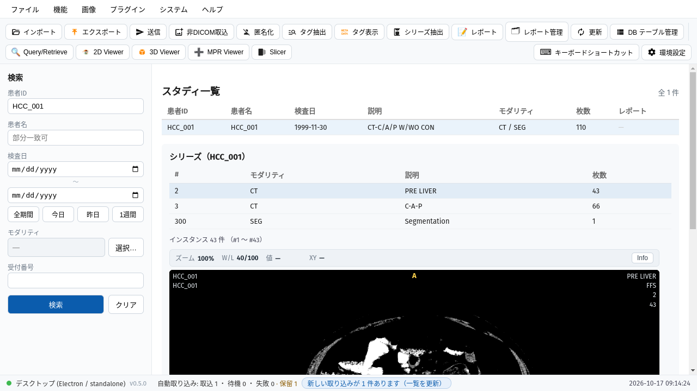
自動取り込みの取込・待機・失敗の件数。保留があれば件数を出します
新しい取り込みが n 件あります: 押すと一覧を読み込み直します（自動では読み込み直しません）
取り込み済みの NIfTI があとで変わっても、取り込み直しません（「更新を検知」として数えます）。
CSV に不正があれば、そのフォルダは何も取り込まずに保留にします。ほかのフォルダの取り込みは止めません。
STEP 8 / 2D ビューアの改良
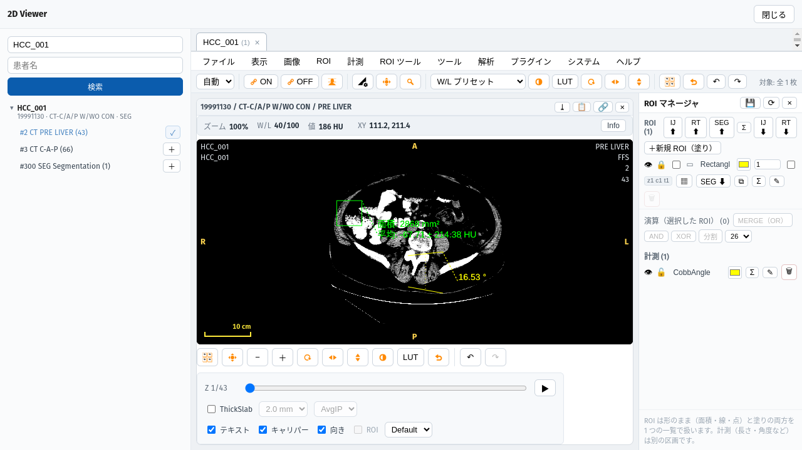
ROI メニューの Cobb 角。離れた 2 本の線のなす角を測ります
ロック（ROI マネージャの 🔒）。動かず、Delete・ゴミ箱・全消去でも消えません
📋 で画像をクリップボードへコピー。ROI があれば「ROI も含めてキャプチャしますか？」と聞きます（四隅の文字は含みません）
拡大レンズ（4×）: 画像メニューで選び、左ボタンを押している間だけ、カーソルのまわりを 4 倍で表示します。
ロックと表示・非表示は保存され、開き直しても残ります。
STEP 9 / MPR Viewer
各面に、ほかの 2 面の位置が線で出ます。画像をクリックすると、3 面がその点へ移ります。
以前の版では、色の渡し方の誤りで十字線が描かれていませんでした（クリックで移る操作は動いていました）。
線の色は 環境設定 ＞ 表示 ＞ MPR の「十字線の色」で、面ごとの色（Axial 緑・Sagittal 黄・Coronal 青）か単色（色も選べる）を選べます。
設定を変えたら、MPR を開き直すと反映されます。
STEP 10 / ROI ツール ＞ 2D Wand
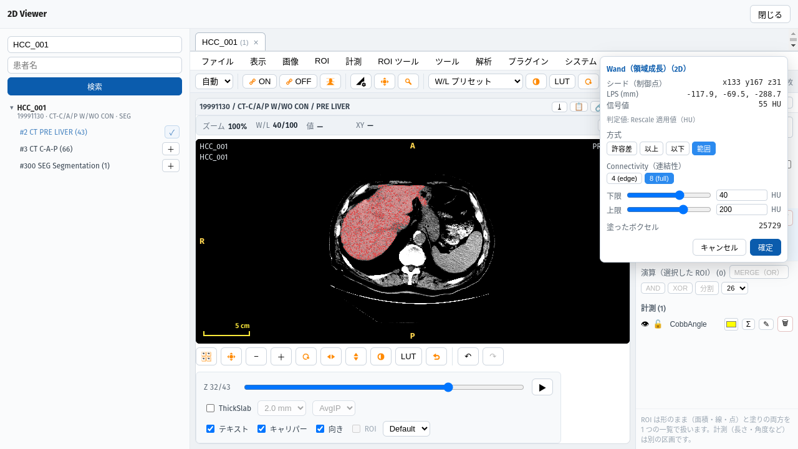
判定値。CT・PET は HU・SUV、Rescale の無い画像は画素値、カラーは輝度。どの方式もこの値で判定します
以上・以下・範囲がどの画像でも選べます
下限（数値かスライダー）
上限
塗ったボクセルの数
動画（XA シネなど）では 3D Wand は使えません。2D Wand は使えます。
許容差（既定）も判定値の差で測ります。シードが条件の外なら理由が出ます。
STEP 11 / ROI マネージャ ＞ 塗りの ROI の Σ³

Σ³ で塗りの ROI の 3D 統計を出します
体積（mL）・ボクセル数・スライス数と、平均 ± SD・最小・最大。単位は 2D の ROI と同じ（CT は HU、PET は SUVbw など）
PET（SUV）では TLG（平均 × 体積）の行が出ます。CT・MR では出ません。
値を読めないスライスがあるときは、平均などを出さずに「値を読めないスライス n 枚」と表示します（体積とボクセル数は出ます）。
STEP 12 / ROI 計測結果 ＞ 画素の書き出し
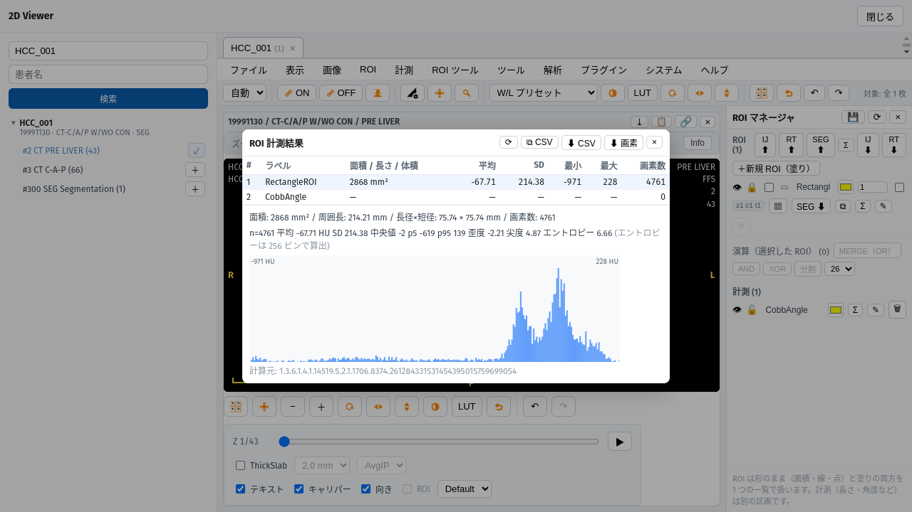
⬇ 画素: 選んでいる ROI の、統計に使った画素を 1 行 1 画素で保存します（roi-pixels-番号.csv）
書き出す ROI の行。行数は「画素数」と同じで、値の平均は「平均」と一致します
列は ラベル・ROI の ID・col・row・x/y/z（患者座標 LPS の mm、画素の中心）・値（単位つき）・画像 ID です。
位置の情報が無い画像（XA など）では x/y/z を空欄にします。線の ROI では押せません。
STEP 13 / ROI マネージャ ＞ 塗りの ROI の Σ
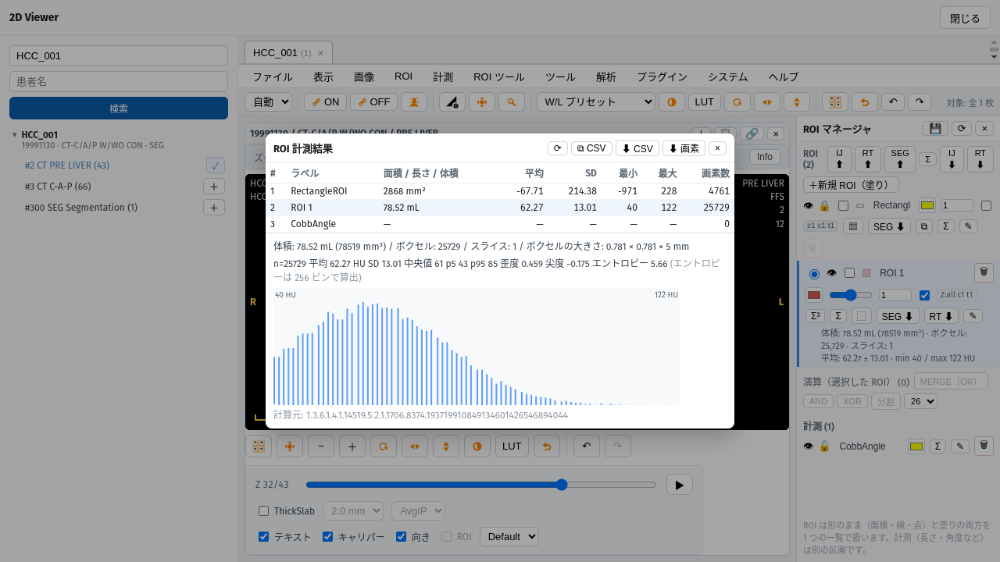
塗りの ROI の行の Σ で、その ROI の計測結果を開きます
⬇ 画素: 統計に使ったボクセルを、スライス順に 1 つの CSV に保存します（mask-voxels-番号.csv）
塗りの ROI の行。大きさの欄は体積（mL）、画素数の欄はボクセル数で、Σ³ の値と一致します
CSV の列は ラベル・ROI の ID・slice（ビューアと同じ 1 始まりの番号）・segment・col・row・x/y/z（患者座標 LPS の mm）・値・画像 ID です。
パラメトリック球は、「塗りにする」で塗りの ROI にしてから測ります。
STEP 14 / 計測メニュー
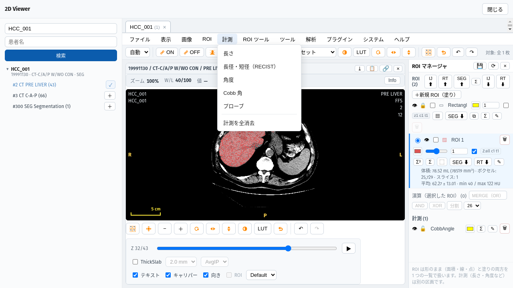
計測メニュー（新規）。長さ・長径と短径・角度・Cobb 角・プローブはここから
計測はマスク（塗り）にはしません。長さとプローブは、ROI マネージャの →ROI で線 ROI・点 ROI に変えられます
計測を全消去は計測だけを消します（ROI は残ります）。ROI メニューの「ROI を全消去」は ROI だけを消します
ROI メニューは面・線・点 ROI（新規）です。
STEP 15 / ROI ツール ＞ ROI マネージャ
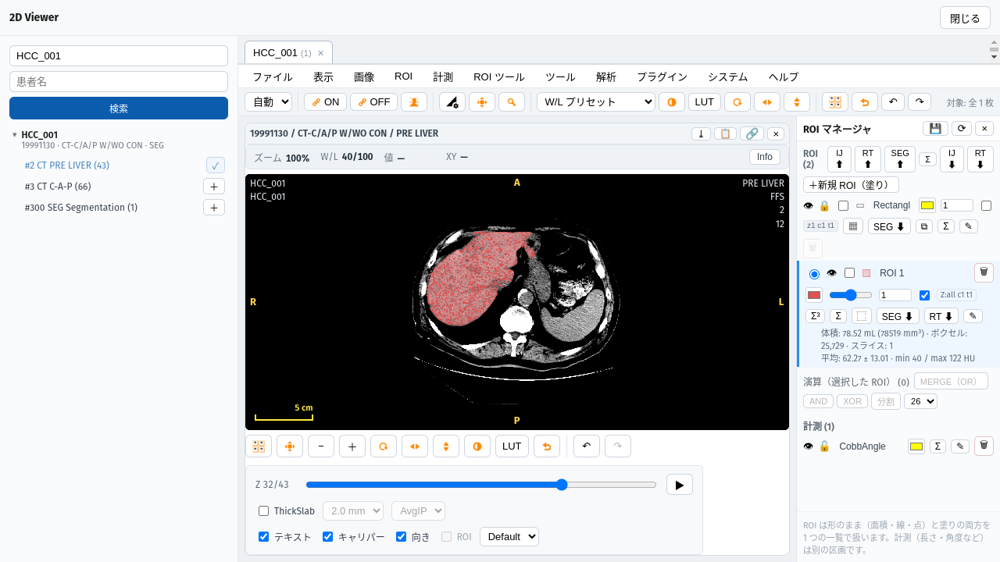
＋新規 ROI（塗り）: 新しい塗りの ROI を作ります。ROI ごとに別に持つので、ROI どうしを重ねて塗れます
塗りの ROI の行（Wand・ブラシ・SEG など）。1 つの ROI に 1 行です。行を選ぶと、ブラシや Wand の塗り先になります
計測の行（長さ・Cobb 角など）。ROI とは別の欄です
これまでの「マスク」の欄はなくなり、塗りの ROI も ROI の欄に並びます。表示・名前・統計（Σ・Σ³）・RT⬇・削除は行ごとに行えます。
SEG⬇ は、その ROI を含むマスク全体を書き出します。
STEP 16 / 3D ビューワ ＞ シーンオブジェクト
2D ビューアの ROI から 3D ROI を追加…: 2D の ROI マネージャの行と同じ名前・色で並びます。1 つずつ「追加」、または「すべて追加」
取り込んだ ROI には「取り込み済み」と出ます
3D ROI の体積は 1 つにまとめ、2D の Σ³ と同じ値を出します（以前の「体積（メッシュ）」の行はなくしました）。
2D ビューアは開いたままにしてください。
STEP 17 / 3D ビューワ ＞ シーンオブジェクト
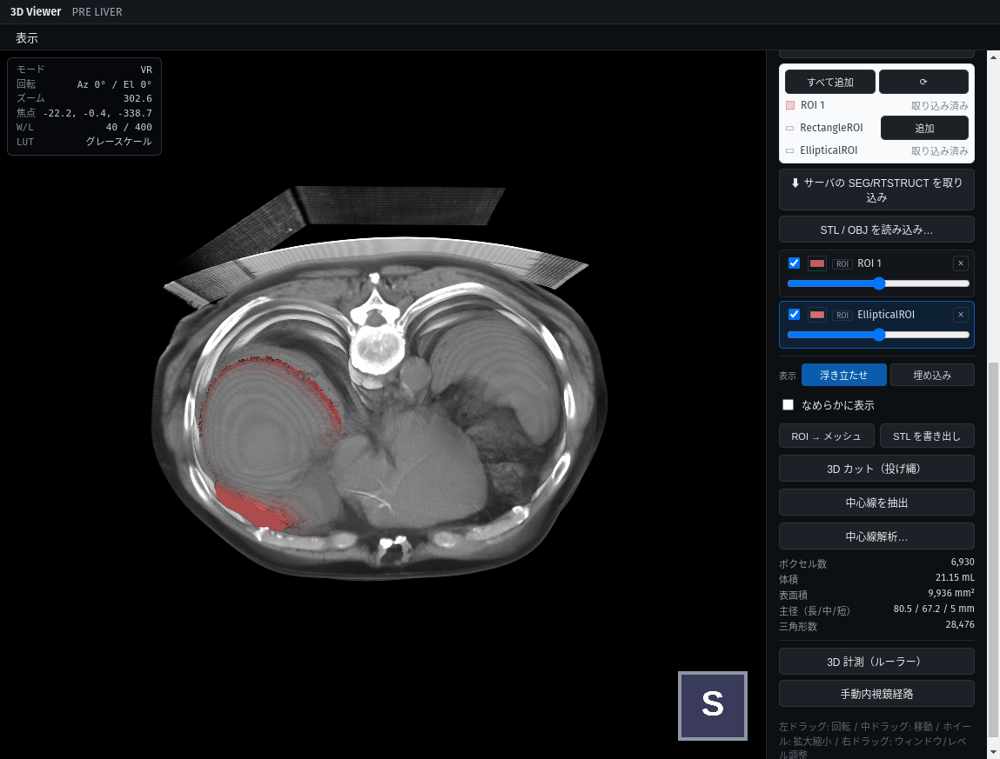
2D で描いた楕円 ROI を、▦（塗りにする）を押さずに取り込みました。矩形・円・閉じた自由形なども同じです
なめらかに表示: 見た目だけをなめらかにします。体積は元の形の値のままです
体積は、各スライスを実際の位置と幅で立ち上げた形から求め、2D の Σ³ と同じ値になります
形の ROI は ROI マネージャの SEG⬇ でも、そのまま DICOM SEG に書き出せます。
スライスの間隔がそろっていないシリーズは、3D・MPR では最小の間隔に補間して出し、画面の上に注記を出します。
STEP 18 / 画像 ＞ リサンプル・切り抜き…
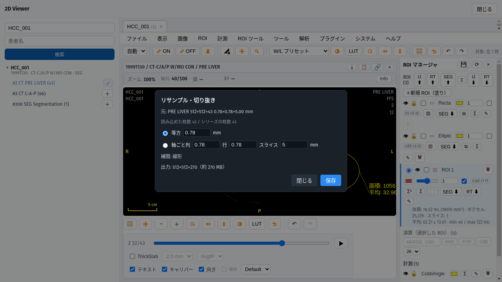
元のシリーズの大きさと画素の間隔。読み込めた枚数も並べて出します
等方（全軸同じ間隔）か、軸ごと（列・行・スライス）を選びます
出力の大きさとメモリの見積り
「保存」で、引き直した画像を別のシリーズとして保存します。元のシリーズは変わりません。向きと原点は元と同じです。
間隔が 0・負・空のときは保存できません。見積りが大きすぎるときは確認が出ます。
そのほかの改良（1/2）
| どこで | 何ができるようになったか |
|---|---|
| 一覧画面 | エクスプローラー・Finder からファイルやフォルダをドラッグ＆ドロップして取り込める（デスクトップ版） |
| RTSTRUCT | 読み込みで穴が埋まらないようにし、構造ごとに 1 つの塗り ROI にした。RT⬇ で塗りの ROI・線 ROI・点 ROI も書き出せる |
| ROI の範囲 | z・c・t の番号をビューアと同じ 1 始まりで表示（z1 c1 t1） |
| 取り込みのあと | 一覧にいま取り込んだ検査だけを出す（検査日が今日でなくても見える）。帯の「検索条件の一覧に戻る」で元の一覧へ |
| キーボード | F で全画面（どの窓でも。Esc でも戻る）。2D ビューアで W / P / Z / L / A / R / E を押すと、W/L・移動・拡大・長さ・角度・矩形・楕円に切り替わる |
| 2D ビューアの ROI | 選択中の ROI は内側をドラッグして移動できる。Ctrl（Mac は ⌘）＋クリックで複数選択し、表示中のスライスの選択中 ROI をまとめて動かせる |
| ROI メニュー | 円 ROI を追加。中心から外へドラッグして描く。ROI マネージャの ◎ で球に、⬤ で塗りの球にできる |
そのほかの改良（2/2）
| どこで | 何ができるようになったか |
|---|---|
| 2D のタイル | タイルの見出しをダブルクリックすると、そのタイルだけを大きく表示。もう一度で元の並びに戻る |
| Fusion | 操作バーの「重ね方」で差分・乗算を選べる。表示上の合成で、画素値（HU・SUV）の引き算ではない |
| 3D ビューア | 環境設定 ＞ 表示 ＞ 3D ビューアで背景色を変えられる（VR・MIP・Ortho・Slab） |
| NIfTI の取り込み | 整数でない値（ADC・T1 マップなど）を 32 bit float の Parametric Map として取り込み、単位を選べる。2D の W/L・MPR・3D・テクスチャでも扱える |
| プラグイン | Drive が正本のときも、プラグインが手元に無い画像を先に取り寄せてから処理できる（host.storage） |
| 起動の表示 | スプラッシュの段階を分け、何を待っているかが分かるようにした |
| 画像の削除 | ファイルも消す設定のとき、消した画像の ROI・位置合わせ・プラグインの記録なども片付ける（レポートは残す） |
直したこと・安全性
| どこで | 直したこと |
|---|---|
| 接続の制限 | デスクトップ版の HTTP を、その PC（127.0.0.1）からだけ受けるようにした。ブラウザ経由の不正な呼び出しも塞いだ |
| DICOM TLS | TLS のパスワードを OS の鍵束に保存し、画面の API でも返さないようにした（鍵束の無い環境では、警告を出して従来どおり保存） |
| プラグイン | プラグインの導入の同意を、本体の確認の窓からしか変えられないようにした |
| 取り込み | 失敗しても元のファイルを失わない。空のフォルダや作業用のフォルダを残さない |
| 患者 ID の変更 | ROI などの記録も新しい患者 ID へ運ぶ |
| 患者情報の編集 | ファイルの書き換えに失敗したら、全ファイルと索引を編集前のまま残す（以前は索引だけ変わることがあった） |
| DSA | Alt＋↑ / ↓（マスクの上下のシフト）が効いていなかったのを直した |
| ROI | 開き直すとロックが外れて見えた・表示の切り替えが保存されなかったのを直した。双方向計測を ImageJ 形式で書き出すと矩形になっていたのを直した |
| 3D の ROI | 間隔が不均一なシリーズで、取り込んだ ROI が別のスライスに載っていた。端のスライスの ROI が画像の外へはみ出していた。少し斜めのシリーズ（MR など）で 2D の ROI を 3D に取り込めなかった |
| 起動が遅いとき | 起動の待ち（60 秒）を超えても、あとで本体が立ち上がれば自動でつながるようにした（以前は「Disconnected」のまま） |
| 再起動（Linux） | AppImage で DB フォルダの切り替えなどの再起動が失敗していたのを直した |
変更の全体はリリースノート（GitHub の Releases）にあります。